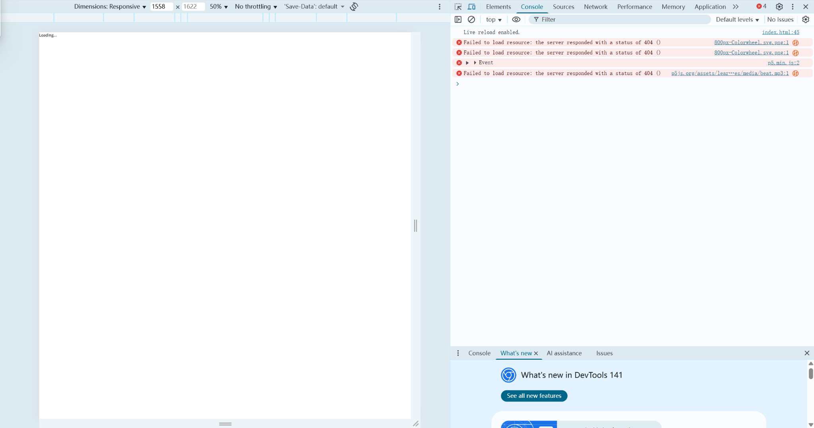
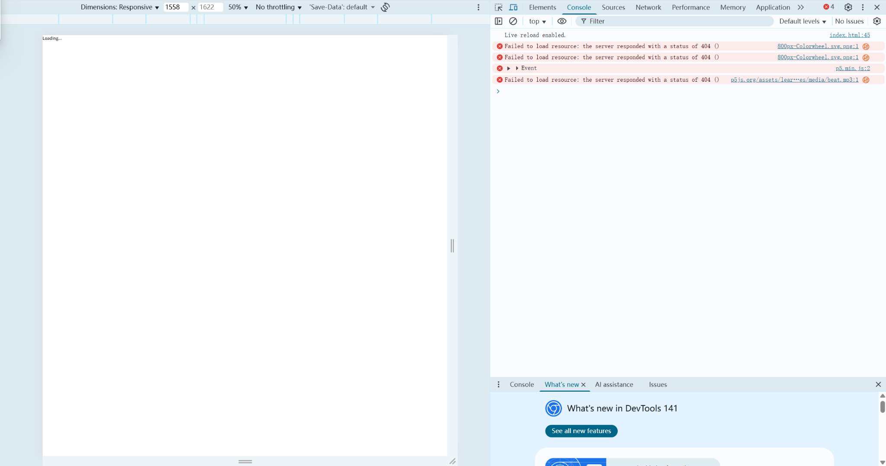

Process & Notes
I created a web page featuring non-linear movement and twinkling star effects on the background of an image. And you can also drag the star! I also tried the function of displaying a small logo on the browser's display box for this web page.
Sketches
 

At first, neither the images nor the background music appeared on the webpage.After checking the console and file structure, I realized the problem was caused by incorrect file paths.I mistakenly included an extra folder name in the path, even though the files were already in the same directory as the sketch file.After fixing the relative paths, all assets loaded correctly. (But later I thought the background music was a bit noisy, so I removed this function.)
During development, I adjusted the layout and visual balance of the webpage multiple times. However, I did not save screenshots of these intermediate visual changes.Because of this, I am unable to include the visual debugging process in the documentation.(Sorry! T-T)